From five sources to one decision.
Every month, seed production planners had about two days to decide which batches could meet each country’s demand. The answer was spread across spreadsheets, ERP data and PDF reports. I led the design of a tool that brings it into one workbench, from the demand to the mix.

Dashboard: stock, quality status and what is coming, with a notification when a new monthly plan arrives.
Not the live product, but almost. Every screen here was redesigned following the real product strictly: same layout, content and flows. Only the visual style (colours, type and icons), names and data were changed, so the client’s tool is not exposed.
The answer lived in five places at once.
Each month a production plan arrives with what every country needs. Site planners then have to find which seed batches in stock can meet it, at the right quality, under each country’s rules.
To answer, they cross-checked a monthly spreadsheet, ERP stock exports that were already out of date, quality reports in PDF, country requirements and business rules that lived partly in the ERP and partly in people’s heads. When no single batch was good enough, they had to blend several, and ask a process expert for approval by email when a batch fell outside spec.
Demand, stock, quality and rules in the same place, connected to the ERP.
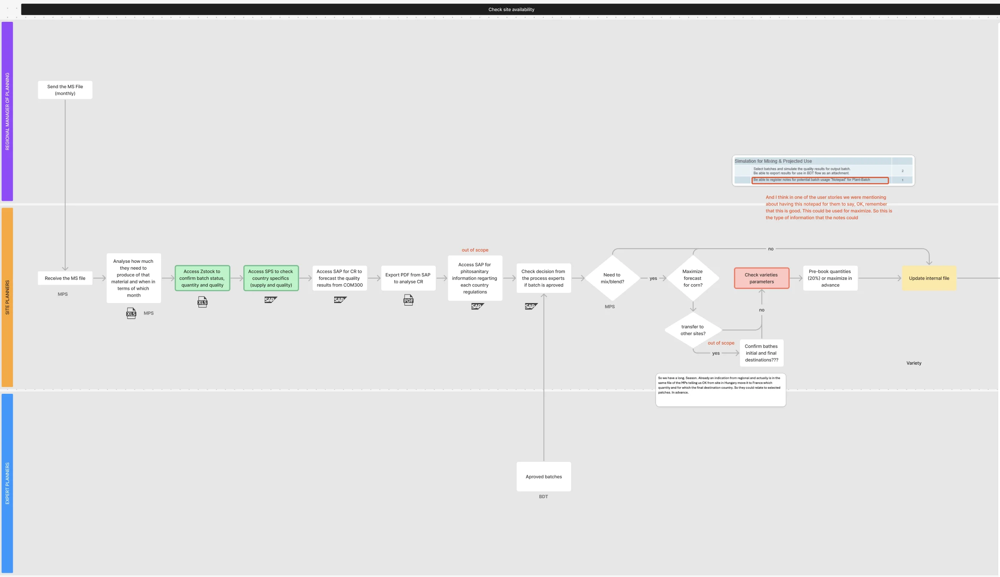
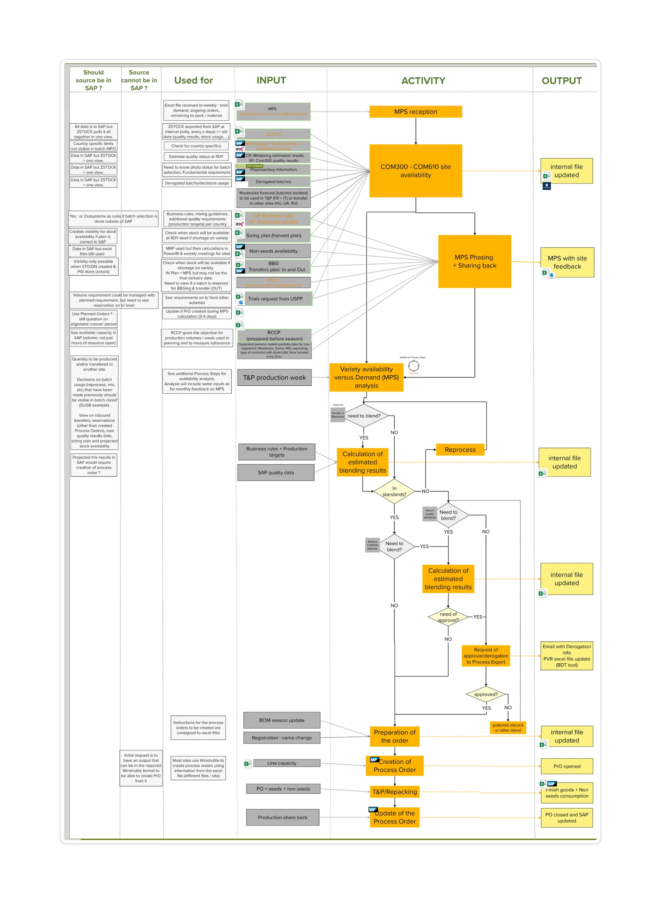

Six weeks from kick-off to tested design.
Data split across spreadsheets, ERP and PDFs, with stock that was rarely up to date.
Each country had its own process and its own columns.
Everything cross-checked by hand under a two-day deadline.
Large volumes of stock and quality data with no clear view.
So many rules that new planners took a long time to learn.


Site planners
Match each demand with stock, blend when needed and prepare the production order.
Needs: one view, trusted data, rules at hand.
Regional planners
Send the monthly plan and follow stock and progress across sites.
Needs: a lighter view of demand and stock.
Process experts
Approve or deny batches that fall outside spec.
Needs: full context of each request, without email threads.
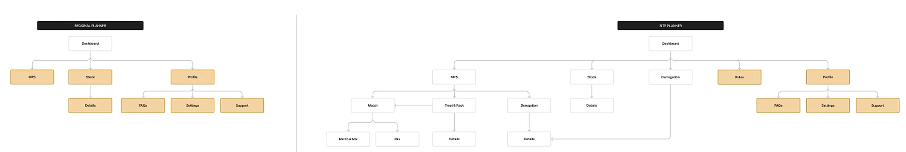
Discover
Mapped the real process with 4 people from the client.
- 3 knowledge-sharing sessions
- As-is process map
- Journey map & insights
Co-create
Shaped the product with the people who would use it.
- Co-creation workshop + follow-up
- Story map, 60+ user stories
- Navigation for two profiles
Test
Put a clickable prototype in front of real planners.
- 6 remote moderated sessions
- Planners from 5 countries
- 12 tasks, full journey
Deliver
Stayed with the team after handover.
- Handover to developers
- 6 sprints of follow-up
- Launch in September 2024
The artefacts behind each step. Click a tab, and any image to enlarge it.


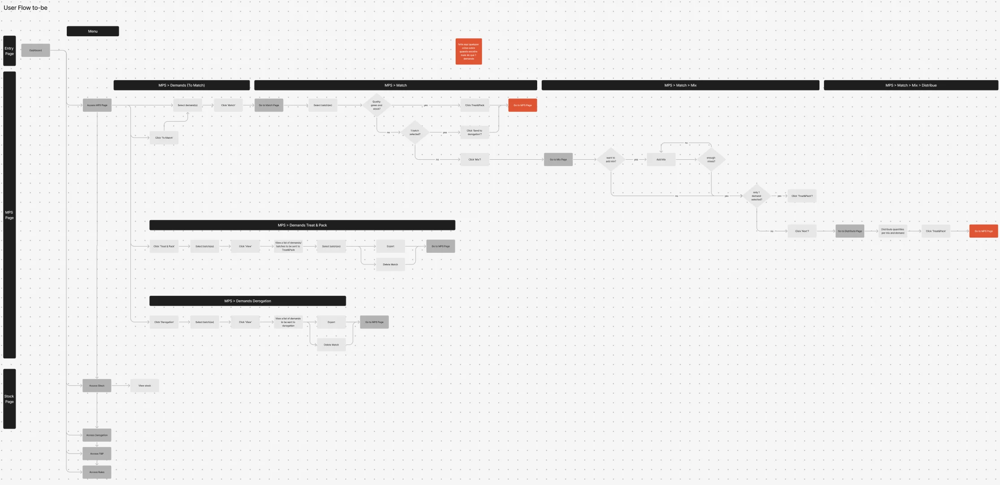

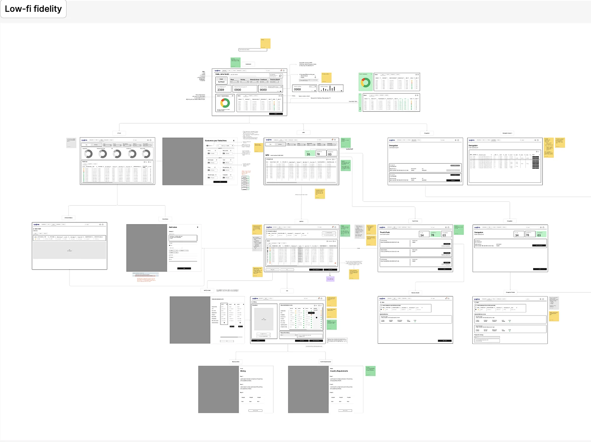
Drag the handle to go from low-fi to final.


Low-fiBatches side by side; the simulation was still an open question.
FinalThe live calculator, every quality parameter checked against the rules and a required reason for mixing.
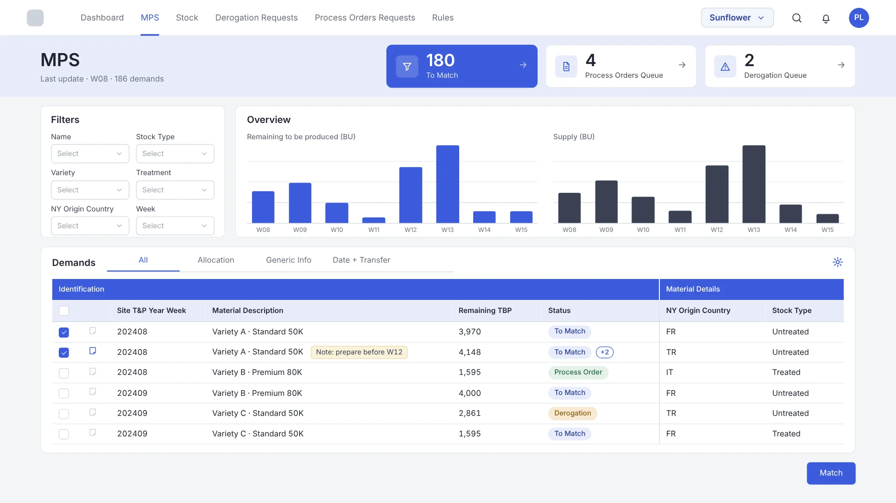
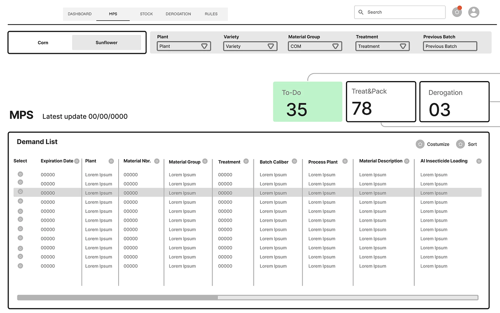
Low-fiA demand list with three counters.
FinalThree work queues, overview charts, notes and partial fulfilment (+2) on a single demand.
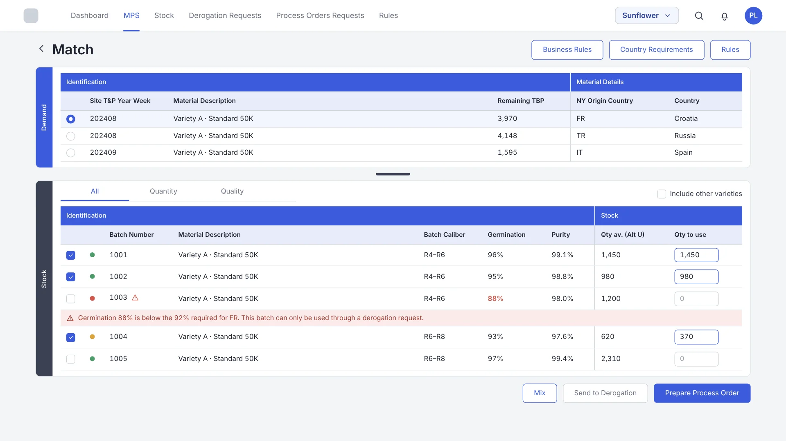
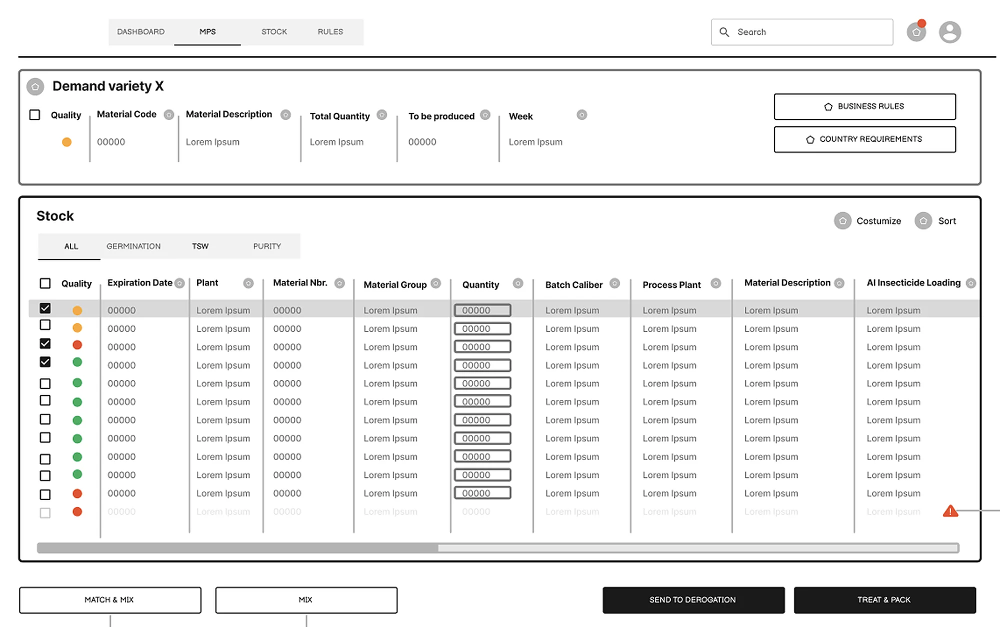
Low-fiDemand header and stock table with inline quantities.
FinalDemand and stock side by side, column groups to tame 30+ columns and quality checked inline against country requirements.
The calls that shaped the product.
Start from demand, not from stock
The first concept opened on a stock dashboard. We moved the starting point to the monthly demand, organised as work queues: to match, process orders and derogations.
WhyPlanners think in orders to fulfil, not in batches to browse.
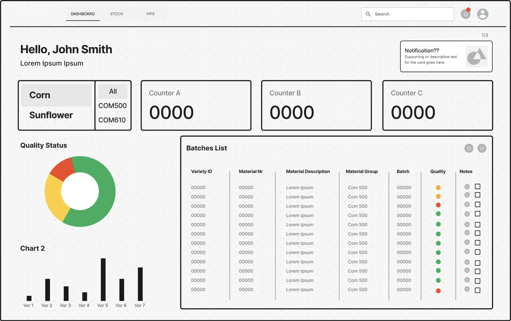
Simulate before you mix
A calculator projects the quality of the blend while batches are added, with each parameter checked against the rules.
WhyMixing was the most error-prone step. Seeing the result first removes the guesswork.
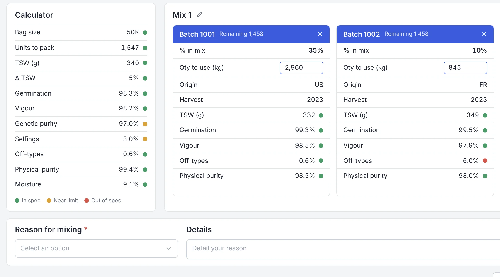
One batch, many demands
After a match or a mix, quantities can be split across several demands, with a warning on any cell that breaks a country requirement.
WhyIn real life one good batch serves more than one country.
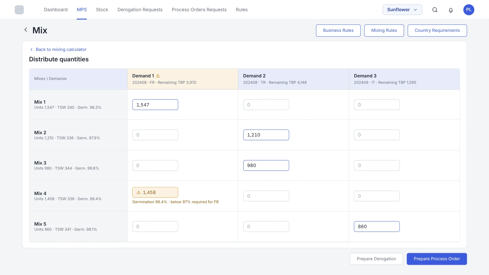

Approvals inside the flow, not in email
Out-of-spec batches go to a derogation queue with pending, approved and denied states. Only approved requests move on to production.
WhyEvery decision keeps its reason, date and owner, so nothing gets lost in an inbox.
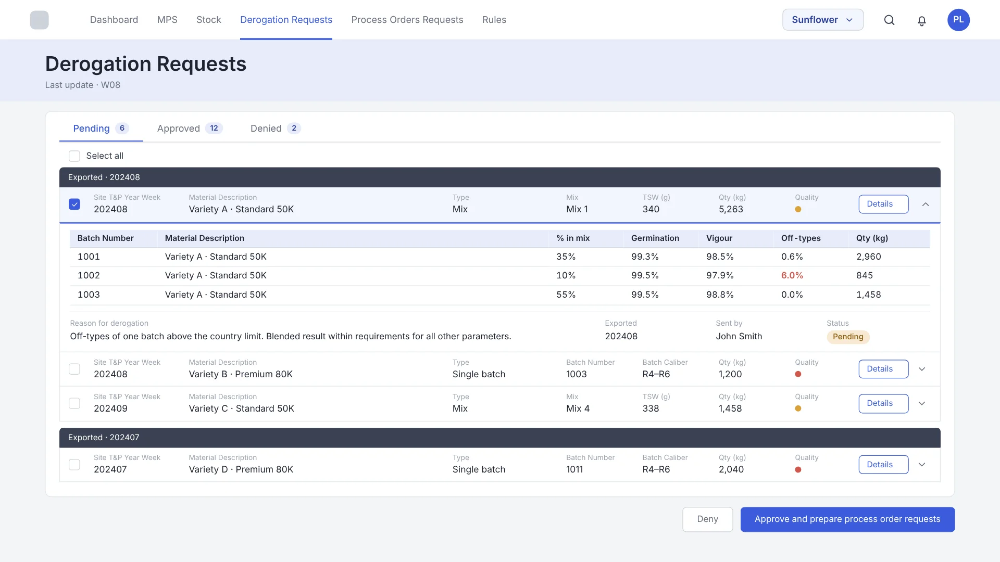
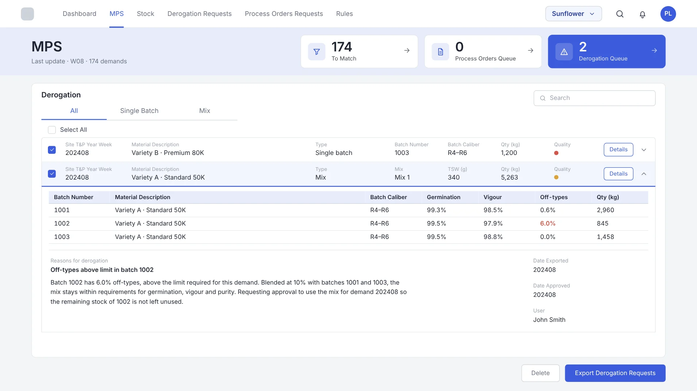

A colour per crop
The header changes with the crop: in the real product, warm yellow for sunflower and dark for corn, each with a subtle illustration of the crop. The recreated screens use a neutral sample palette, light blue and dark, but keep the same idea.
WhyPlanners switch between crops all day. A glance is enough to know where you are.
Testing showed us the exceptions.
Six remote moderated sessions with planners from Spain, Italy, Turkey, Ukraine and Russia, plus one in-house session. Twelve tasks covered the full journey on a clickable prototype.
Country-to-country restrictions
Some countries can’t receive stock from certain others. We added conditions so those batches are flagged before they are matched.
Countries that never mix
Some countries don’t blend batches at all. Mixing became conditional, so those planners never see options they can’t use.
As a site planner, I want to see the blended quality before I confirm a mix so that I don’t send an out-of-spec batch to production.
- Each parameter shows a status against the destination country’s rules.
- Quantities above available stock are blocked.
- A reason for mixing is required before moving on.
Launched, and asked for by others.
The tool went live in September 2024 and was already in use in eight countries in its first months: the five from the usability tests (Spain, Italy, Turkey, Ukraine and Russia) plus Brazil, Argentina and China. Global adoption is expected within a year.
The client’s project manager and its head for Europe and the Middle East confirmed the product was meeting expectations.
Client feedback after launchThe best signal came unprompted: a country from the usability tests told a neighbouring country about the tool. That country, which works with other seeds, contacted the global project manager to ask for a version of its own. Extending the tool to more crops is now part of the company’s plans.
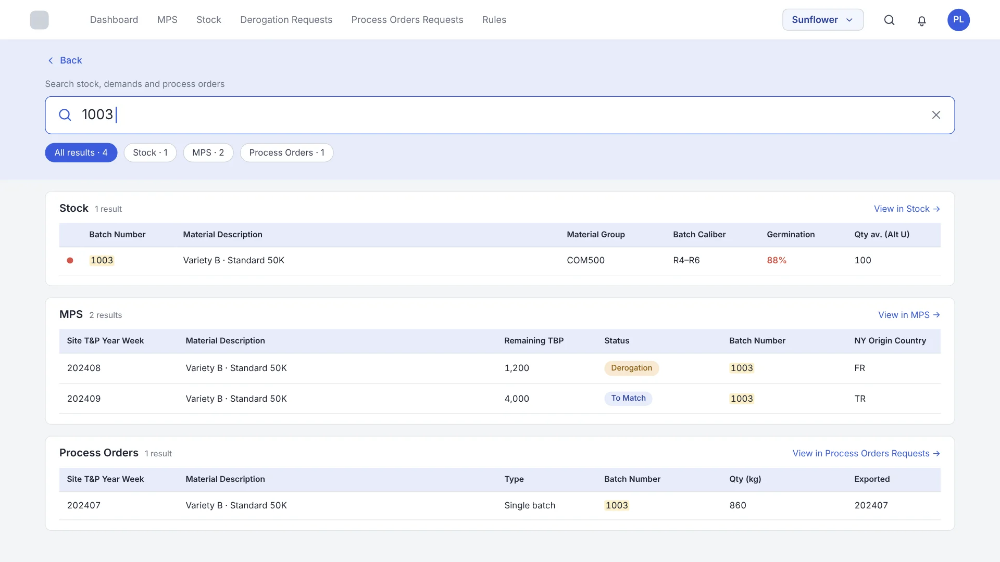


Design for the exceptions.
The main flow was clear after discovery. What made the product work in eight countries were the exceptions we only found by testing with planners from each of them. In a global tool, the rule is that every country has its own.